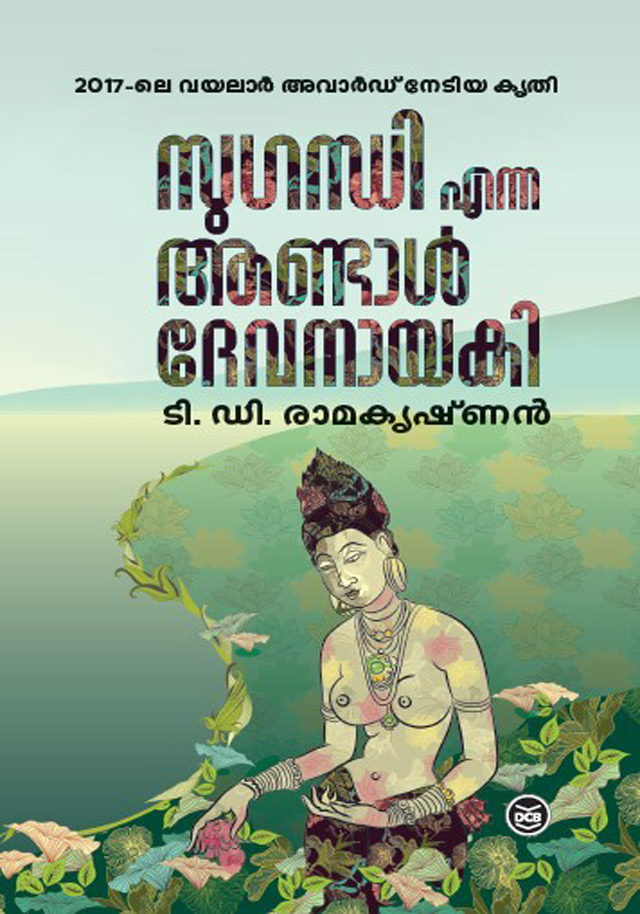

ടി ഡി രാമകൃഷ്ണന്റെ ദേവനായകി

മിത്തും ചരിത്രവും ഇടകലർന്ന രചനാ ശൈലി പിൻതുടരുന്ന ഒരു എഴുത്തുകാരനാണ് ടി ഡി രാമകൃഷ്ണന്റെ. അദ്ദേഹത്തിന്റെ രണ്ടു നോവലുകൾ ഞാൻ വായിക്കുകയുണ്ടായി ആദ്യം വായിച്ചത് "ഫ്രാൻസിസ് ഇട്ടിക്കോരയും" രണ്ടാമത് വായിച്ചത് "സുഗന്ധി എന്ന ആണ്ടാൾ ദേവനായകിയും" രണ്ടു നോവലുകളും ഭാവനയുടെ ഒരപരിചിത സുഖം പകരുന്നു. ചരിത്ര വസ്തുതകളെ ഭാവനയുടെ കോണിലൂടെ നോക്കിക്കാണുമ്പോൾ ഉണരുന്ന നോവലിസ്റ്റിന്റെ കൗതുകമുണർത്തുന്ന ഭാവനകൾ പൂരിപ്പിക്കപ്പെടാത്ത ചരിത്രത്തിന്റെ ദുരുഹത വർധിപ്പിക്കുകയും വായനക്കാരെ ജിജ്ഞാസയുടെ കൊടുമുടിയിലെത്തിക്കുകയും ചെയ്യും.
ലളിതമായ ഭാഷയിൽ വിസ്മയകരമായ രീതിയിൽ സൃഷ്ടിക്കപ്പെട്ട അദ്ദേഹത്തിന്റെ ഭാവനാ കഥാപാത്രങ്ങളിൽ നിന്നും മോചനം നേടാൻ വായനക്കാർ അല്പം ബുദ്ധിമുട്ടേണ്ടി വരും. ഇട്ടിക്കോര വായിച്ച ശേഷം ആ നോവലിലെ പല സംഭവങ്ങളെ പറ്റിയും ഞാൻ നിരന്തരമായി ഇന്റർനെറ്റിൽ സെർച്ച് ചെയ്യ്തത് ഓർക്കുന്നു. ആ പുസ്തകത്തിന്റെ പല ഭാഗങ്ങളും പിന്നീടും പല തവണ വായിച്ചിരുന്നു.
ചെറുപ്പത്തിൽ സ്ഥിരമായി കേൾക്കാറുള്ള തമിഴ് പുലികളെപ്പറ്റിയുള്ള വാർത്തകൾ ശ്രീലങ്കയെപ്പറ്റിയും LTTE യെ പറ്റിയും പ്രഭാകരനെപ്പറ്റിയും നമ്മുടെ മനസ്സിൽ ഉണ്ടാക്കിയിട്ടുള്ള 2009 വരെയുള്ള ചിത്രത്തിന് വിരുദ്ധമായ ഒരു ചിത്രം ആണ് "സുഗന്ധി എന്ന ആണ്ടാൾ ദേവനായകി" യിലൂടെ നമുക്ക് ലഭിക്കുന്നത്. മിർസാപൂർ എന്ന വെബ് സീരീസ് കണ്ടു കഴിയുമ്പോൾ ആ നാടിനെക്കുറിച്ചും ആളുകളെക്കുറിച്ചും നമ്മുടെ മനസ്സിൽ പതിയുന്ന ഒരു ചിത്രം ഉണ്ട്, അതുപോലെ ടി ഡി രാമകൃഷ്ണൻ ഈ നോവലിൽ നമ്മുടെ മനസ്സിലെ ചിത്രങ്ങളെ മാറ്റി വരപ്പിക്കുന്നത്തിൽ വിജയിച്ചിരിക്കുന്നു.
ജനാധിപത്യവിരുദ്ധത വിപ്ലവപ്രസ്ഥാനങ്ങളെ എങ്ങനെ തകർക്കുമെന്ന വിഷയത്തിൽ സിനിമ നിർമിക്കാനൊരുങ്ങുന്ന സിനിമ പ്രവർത്തകരും അവരെ സ്പോൺസർ ചെയ്ത് യുദ്ധകാലത്തെ തങ്ങളുടെ മനുഷ്യവകാശ ധ്വംസനങ്ങളെ വെള്ളപൂശാനും അന്താരാഷ്ട്രതലത്തിൽ വിമർശിക്കപ്പെട്ട മുഖം മിനുക്കാനും ശ്രമിക്കുന്ന ശ്രീലങ്കൻ ഗവൺമെന്റും ഈ നോവലിന്റെ പശ്ചാത്തലം ഒരുക്കുന്നു.
സ്വാതന്ത്രത്തിനു വേണ്ടി ഫാസിസ്റ്റ് ഭരണത്തിനെതിരെ പൊരുതുന്ന LTTE പോലെ ഒരു പ്രസ്ഥാനം പിൻതുടരുന്നത് ആധുനിക ജനാധിപത്യ മൂല്യങ്ങൾക്ക് പകരം ഫാസിസ്റ്റ് ആശയങ്ങൾ തന്നെയാണെങ്കിൽ അതിന്റെ ബലഹീനരായ അണികൾ അതേ പ്രസ്ഥാനത്തിന്റെ തന്നെ ഇരകളാക്കപ്പെടുന്ന ഒരു അവസ്ഥ സംജാതമാകുന്നു. ഇത് താത്കാലിക വിജയത്തിലേക്കും തുടർന്ന് അസംതൃപ്തവും അസ്ഥിരവുമായ ഭരണത്തിലേക്കും തുടർന്ന് വിഭജനത്തിലേക്കോ ശിഥിലീകരണത്തിലേക്കോ നയിക്കപ്പെടുന്നു. വംശത്തിന്റെയോ, മതത്തിന്റെയോ പിന്തുണയുള്ള ഭൂരിപക്ഷ ഫാസിസത്തിനു ജനാധിപത്യവിരുദ്ധ എതിർപക്ഷത്തെ സമർത്ഥമായി ചെറുക്കാനും തോൽപ്പിക്കാനും സാധിക്കും എന്നത് ഹിറ്റ്ലറുടെ നാസി പാർട്ടിയുടെ തിരഞ്ഞെടുപ്പ് ഭൂരിപക്ഷം ചൂണ്ടിക്കാട്ടി നോവൽ വ്യെക്തമാക്കുന്നു.
റഷ്യൻ വിപ്ലവത്തിലൂടെ അധികാരത്തിലെത്തിയ കമ്മ്യൂണിസ്റ്റ് പാർട്ടിയിൽ ഉണ്ടായ ഫാസിസത്തിന്റെ ഉദയവും പിന്നീടുണ്ടായ സോവിയറ്റ് യൂണിയന്റെ തകർച്ചയും, മതാധിഷ്ടിതമായി രൂപം കൊണ്ട് ജനാധിപത്യ രീതിയിൽ നിന്നും വ്യെതിചലിച്ച് പട്ടാള ഭരണത്തിലേക്ക് മാറിയ പാകിസ്താന്റെ ഇന്നത്തെ അവസ്ഥയും നമുക്കറിയാം. ജാതി, മത, വർണ്ണ, വർഗ്ഗ, ലിംഗ, ഭാഷ, പ്രാദേശിക മേഖലകളിലെല്ലാം വ്യെത്യസ്തരായിരുന്നിട്ടും, സ്വാതന്ത്രത്തിനു ശേഷം ഒരു കുമിള പോലെ പൊട്ടിത്തകരുവാൻ വേണ്ട എല്ലാ സാഹചര്യവും നിലനിന്നിട്ടും ഭാരതം ഒരു രാഷ്ട്രമെന്ന നിലയിൽ അത്ഭുതാവഹമായി അതിജീവിച്ചു. അതിജീവനം മാത്രമല്ല വൈരുദ്ധ്യാത്മകമായ സകല ആശയങ്ങളെയും ഉൾക്കൊണ്ടുതന്നെ എഴുപത്തെട്ടു വർഷത്തിനുള്ളിൽ ലോകത്തെ നാലാമത്തെ സാമ്പത്തിക ശക്തിയായി ഉയർന്നു വരുകയും ചെയ്തു. ഇത്തരമൊരു അത്ഭുതകരമായ ചെറുത്തുനില്പിന് അംബേദ്കറും, നെഹ്രുവിയൻ സെക്യൂലറിസവും, ഗാന്ധിയൻ ആശയങ്ങളും ഇന്ത്യൻ ജനാധിപത്യത്തിനു നൽകിയ ശക്തമായ അടിത്തറ എന്നും സ്മരിക്കപ്പെടേണ്ടതാണ്.
നോവലിൽ വിവരിക്കുന്ന മനുഷ്യത്വരാഹിത്യവും, ക്രൂരവുമായ പീഡനരീതികളും, മനുഷ്യാവകാശ വിരുദ്ധവും സ്ത്രീവിരുദ്ധവുമായ നിലപാടുകളും ഇരു പക്ഷത്തെയും തുലനം ചെയ്യുന്നതായി കാണാം. സഹസ്രാബ്ദങ്ങളായി നിലനിൽക്കുന്ന തമിഴ്-സിംഹള യുദ്ധങ്ങളുടെ തുടർച്ചയായി മനസ്സിലാക്കാവുന്ന നിലയിലേക്ക് ഈ വംശീയ വിഷയത്തെ സമീപിക്കാൻ ചരിത്ര സംഭവങ്ങളുടെ ഭാവനപരമായ പുനരാഖ്യാനത്തിലൂടെ നോവലിസ്റ്റ് ശ്രമിച്ചിരിക്കുന്നത് ശ്രദ്ധേയമാണ്.
"അരത്താലി" പോലുള്ള അനാചാരങ്ങളാൽ സ്ത്രീത്വത്തെ അടിമപ്പെടുത്തി ഭോഗവസ്തുക്കളായി മാത്രം സ്ത്രീകളെ കണ്ടിരുന്ന രാജാക്കന്മാരുടെ അതെ മൂല്യബോധങ്ങൾ പേറുന്ന പുതു ഭരണാധികാരികൾ ഇരകളാക്കിയ സ്ത്രീകളുടെ നിരവധി കഥകളിലൂടെ നോവൽ കടന്നു പോകുന്നു. തമിഴ്-സിംഹള വംശീയ യുദ്ധത്തിന്റെ ഭാഗമായി ഇത്രയധികം സ്ത്രീ ചാവേറുകൾ എങ്ങിനെ സൃഷ്ടിക്കപ്പെട്ടു എന്ന ചോദ്യത്തിനും ഈ നോവൽ പരോക്ഷമായി ഉത്തരം നൽകുന്നുണ്ട്. പുരുഷാധിപത്യത്തിനും ഭരണകൂട ഭീകരതയ്ക്കും പാത്രമായിരിക്കെ സ്വന്തം ബുദ്ധിയും സൗന്ദര്യവും ഉപയോഗിച്ച് സവിശേഷ സ്ഥാനങ്ങളിലേക്കുയർന്ന ചില പ്രധാന സ്ത്രീ കഥാപാത്രങ്ങളാണ് നോവലിനെ മുന്നോട്ട് നയിക്കുന്നത്.
ഭൂരിപക്ഷ പിന്തുണയുള്ള, സൗമ്യതയുടെ മൂടുപടമിട്ട ഫാസിസ്റ്റ് ഭരണകൂടങ്ങൾക്കെതിരെ തന്റെ സമാധാനപരമായ ഗാന്ധിയൻ ആശയങ്ങൾ വിജയിക്കില്ലെന്ന നിലപാടിലേക്ക് മനസില്ലാമനസ്സോടെ എത്തിചെരുന്ന സുഗന്ധിയെന്ന നായിക അവസാനം സ്വയം ഒരു അഗ്നിഗോളമായി തീരുന്നിടത് നോവൽ അവസാനിക്കുന്നു.
നോവലിൽ പറയുന്ന ശ്രീലങ്കയിലെ സ്ഥലങ്ങളും സംഭവങ്ങളും ചരിത്ര പ്രാധാന്യമുള്ളതാണ്, ഇന്ന് പല സ്ഥലങ്ങളും വിനോദസഞ്ചാര കേന്ദ്രങ്ങളോ നഗരങ്ങളോ, ആർക്കിയോളജിക്കൽ സൈറ്റൊ ഒക്കെ ആണ്, സിരിഗിയ (Sigiriya) എന്നെങ്കിലും സന്ദർശിക്കണം എന്ന് നമുക്ക് തോന്നിപ്പോകും വിധത്തിൽ അതേപ്പറ്റി വിവരിച്ചിട്ടുണ്ട്.
ദീപക്ക് കുമാർ